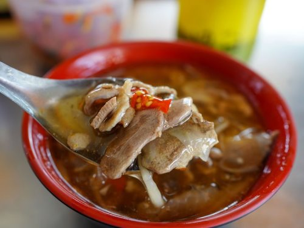
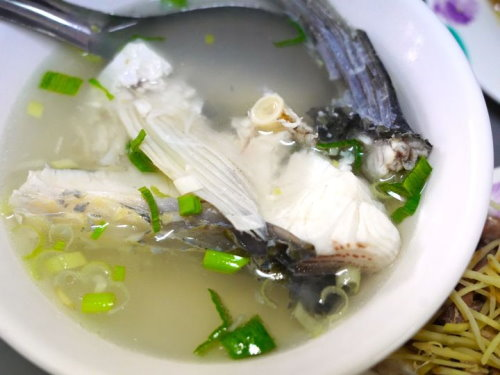
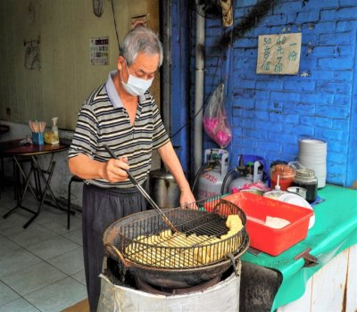

| 水上鴨肉羹 水上草魚粥 水上正義路臭豆腐 | |
| 水上鴨肉羹 | |
|  | 嘉義水上一家在地經營三十年的鴨肉羮店，因為湯頭清甜，給的鴨肉份量不少，深受顧客喜愛，假日更是經常客滿，店家還會把煮好的湯頭「去油」，讓鴨肉羮更清爽，顧客都喜歡「鴨肉羮麵」裡加上自製的辣椒醬，香氣十足。大鍋裡滾煮著內和筍絲熟了之後加上芶芡及烏醋，就是一鍋美味的鴨肉羮，這間在喜義水上的鴨肉羮，湯頭帶著清甜，鴨肉肉質細嫩份量足夠，一碗鴨肉羮麵一定要再加上店家自己炒的辣椒醬，真的超級美味。 嘉義縣水上鄉水頭村正義路139號 資料來源:水上鴨肉羹FBtop |
| 水上草魚粥 | |
|  | #路過不要錯過的鮮滋味想不到吧~沒有別的原因，就一個字 “鮮”你到店裡吃到的魚🐟，都是老闆當天在店門口現殺現煮的，保證絕對新鮮都說海鮮要好吃，最基本的沒別的訣竅，就是要新鮮#超級早鳥開店時間🐦 #嘉義庶民美食營業時間▸04：30-13：30 ， 週一公休地址▸嘉義縣水上鄉中正路149號電話▸05-2601691 資料來源:水上草魚粥FBtop |
| 水上正義路臭豆腐 | |
|  | 自1988創立以來飄香至今已逾半甲子，初期自夜市小攤起家隨著經營型態的改變，老闆遵循對老顧客的承諾 ，要讓大家吹著冷氣吃臭豆腐， 十多年前，在水上菜市場旁正義路172號，開始以店面型態經營，無畏風雨的提供新鮮美味的餐點。 嘉義縣水上鄉正義路172號 0934 082 639 資料來源:水上正義路臭豆腐FBtop |